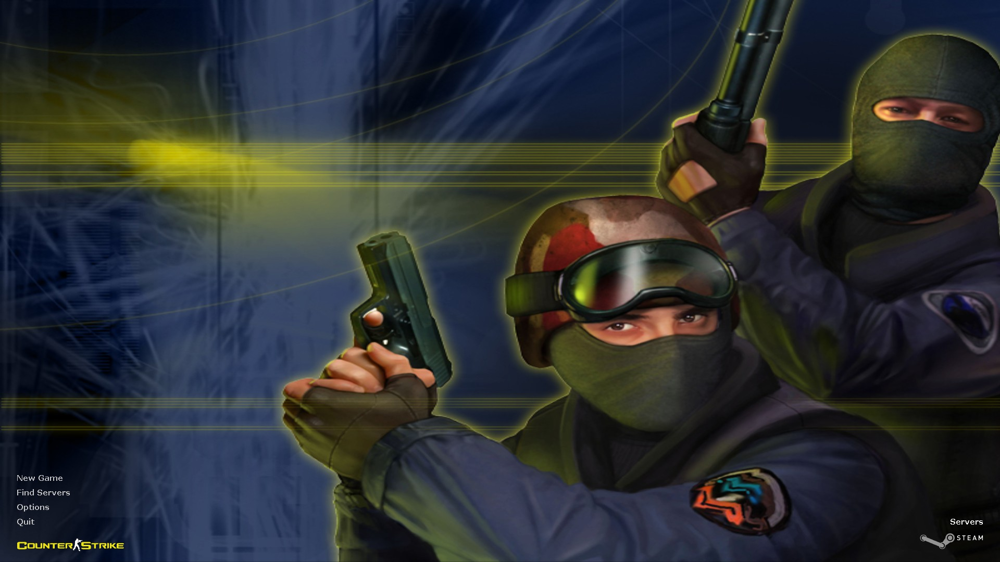
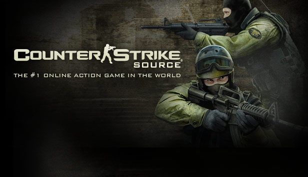

Counter-Strike 1.6
Released in 2000, Counter-Strike 1.6 was a groundbreaking addition to the world of gaming. Built as a mod for Half-Life, it set the stage for tactical first-person shooters. Its simple yet effective mechanics, coupled with iconic maps like Dust and Office, made it a cult classic.
Counter-Strike: Source
In 2004, Counter-Strike: Source brought a major graphical overhaul thanks to the Source engine. While retaining the core gameplay, the improved visuals and physics attracted a new wave of players, bridging the gap between casual gamers and competitive enthusiasts.
Counter-Strike: Global Offensive

Counter-Strike: Global Offensive (CS:GO), launched in 2012, revolutionized the series by introducing competitive matchmaking, weapon skins, and frequent updates. Its accessibility and depth made it a centerpiece of esports, hosting major tournaments watched by millions.
Counter-Strike 2

The latest evolution, Counter-Strike 2, was released in 2023, showcasing cutting-edge graphics and improved gameplay mechanics. Built on the Source 2 engine, it redefined realism and precision, solidifying Counter-Strike's legacy in modern gaming.